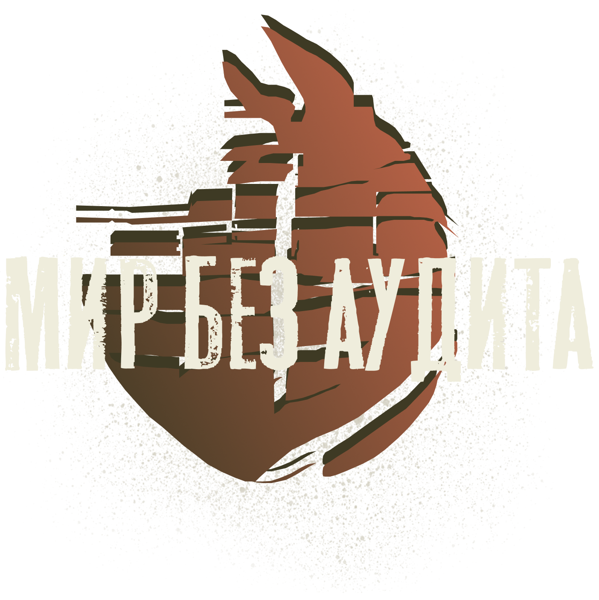
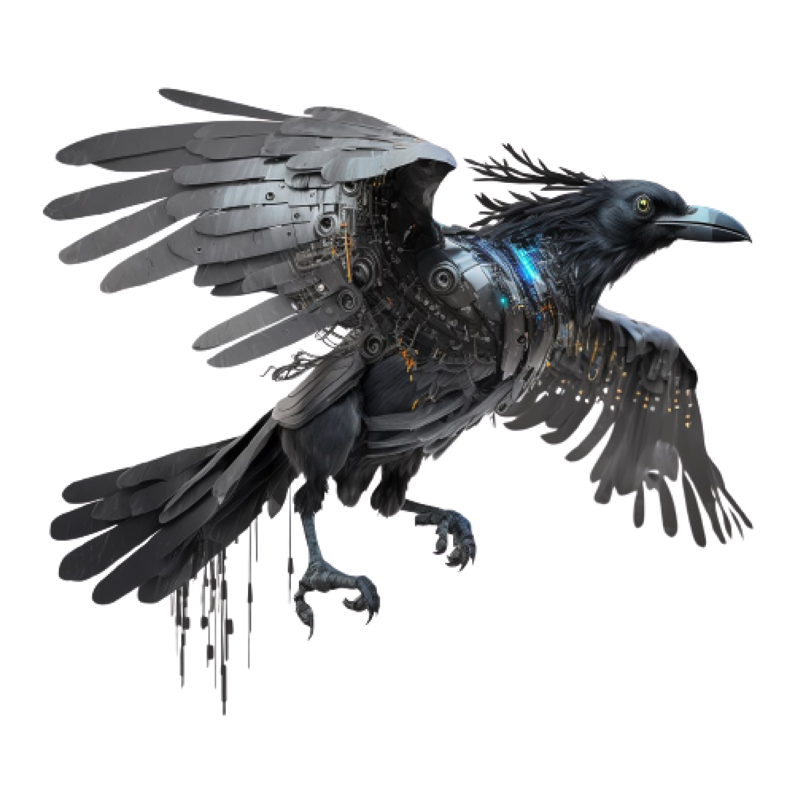
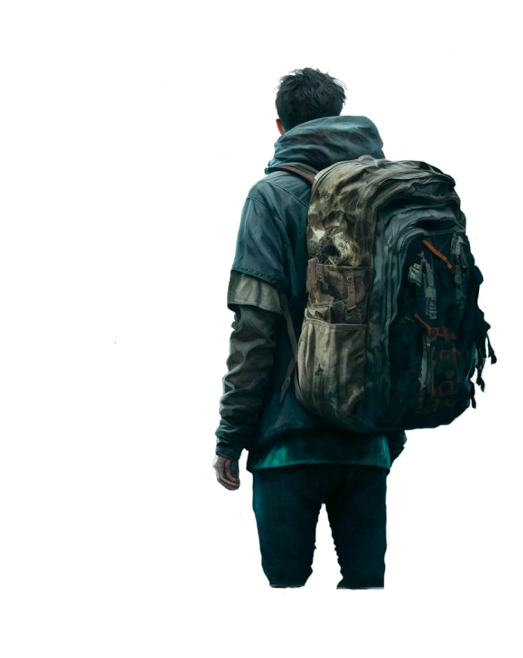

Неверленд, 2123 год. Некогда процветающий регион, теперь это полузаброшенная местность. Она поделена на три локации — вобравшая остатки уюта Деревня, опустелый и опасный Разлом, а также Столица — величественная в прошлом, но теперь захваченная бандой преступников во главе с Пинхасом.
В Деревне живет молодой юноша по имени Назар, сын загадочно пропавшего исследователя аудита и финансового контроллинга. От отца осталась лишь карта, на которой разбросаны точки с местонахождением его архивов. Ведь если бы он хранил все в одном месте, банда Пинхаса разом зачистила библиотеку.
Назар устал видеть страдания своих друзей и близких и решил отправиться в долгое и опасное путешествие. Его цель — собрать все знания, которые указаны на карте отца. В Неверленде работает метро, так что Назар может свободно перемещаться по локациям. За нашим героем последует его верный друг по имени Счётик —
умная киберворона.

